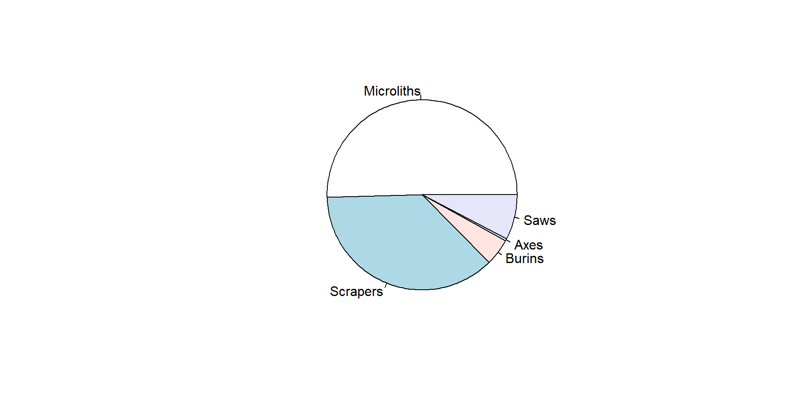

Statistics & Computer Scripts in Archaeology
Historiography of Archaeology 1/2
| Start | Method | Description |
|---|---|---|
| 1850s | Prehistory | evolution, geology, anthropology |
| 1950s | Culture-Historical | similarities, typology, chronology |
| 1960s | New archaeology | chain operative, statistics, chronology (C14) |
| 1980s | Post-processual | dissimilarities, cultural relativism |
| 2020s | Tool-driven | Big data, ML / DL, aDNA |


Historiography of Archaeology 2/2


With the development of computational archaeology (e.g. AI/ML) and data oceans, the archaeologist becomes a research software engineer. A single project probably cannot exploit the full potential of the data at hand. Data is managed (DMP) and made FAIR to produce serendipity over the long term.
Birth of statistics 1/2


Birth of statistics 2/2

Artificial Intelligence & Machine Learning

Type of statistics


Describe the population with the mean (μ), the median (M) and standard deviation (σ)


- conformity (goodness-of-fit) between the observed population and a theoretical distribution (e.g. normal law)
- homogeneity between different populations
- relation between several variables from the same population
Middle Range Theories
Archaeology establishes facts and proposes models to connect these facts
 Model of archaeological reasoning by Renfrew and Bahn, 2020
Model of archaeological reasoning by Renfrew and Bahn, 2020
Robert K. Merton, 1968

We want to compare groups of settlement of 3 different cultures (or sites): A, B, and C
️
️
Conformity

Tobler, 1970

Pieter Bruegel the Elder, The Harversters, 1565

Kingdom of Macedon at the death of Philip II, 336 BC

Spiral of geological times

Startigraphic log and corresponding Harris matrix

An American suburb in the 1950s

Seriation of Chassean potteries in South France

Assembly line work in a Ford factory

Chaine opératoire of flint lamellas knapping

The British Royal Family

Estimate DNA mixture proportions of Modern Europeans
Conformity

| cor | interpretation |
|---|---|
| 1 | … |
| 0.9 | oustanding |
| 0.8 | excellent |
| 0.7 | acceptable |
| 0.6 | weak |
| … | … |
[-1:1]
- Coefficient of correlation
Models

Box, 1976


| propriety | description | example |
|---|---|---|
| Explanatory | not over- or under-fitting |

|
| Regularity | reproducing data regularity |

|
| Robustness | not sensitive to small changes in data |

|
| Parsimony | the simplest possible explanation is also the most probable |

|
| Versioning | carry its own story |

|
Models - Proprieties

Data
Raw data
Primary data acquired via a device (hardware) and not processed
Processed data
Working data (i.e. not definitive)
Aggregated data
Gathered data expressed in a summary form

Metadata
data about data

[1] "Caption-Abstract: Microliths (narrow blade type): Conistone Moor (Late Mesolithic c. 6000 BC) "[1] "Copyright: The Yorkshire Archaeological & Historical Society"Missing data
Lack of knowledge, e.g. NA (Not Available)
| Microliths | Scrapers | Burins | |
|---|---|---|---|
| site_A | 10 | 7 | 13 |
| site_B | 5 | 6 | 7 |
| site_C | NA | 10 | 4 |
| site_D | 2 | 5 | NA |
Sums by column (with NA)
Microliths Scrapers Burins
NA 28 NA Sums by column (without NA)
Microliths Scrapers Burins
17 28 24 Scales


| from | to | transformation | example |
|---|---|---|---|
| Quantitative | Ordinal | discretization |
[1:10], [11:20], etc.
|
| Ordinal | Quantitative |
as.numeric()
|
"low" = 1, "medium" = 2
|
| Ordinal | Nominal |
as.factor()
|
Random patterns versus Clustered patterns


Regular pattern


Gradient pattern

3-dim or more data


3-dim or more data


Computers in Archaeology
|
|
|
|---|---|

|
|
The 🔝 popular web-platform for source code management and software development (with over 128 million public repositories)
R is a scripting language for data science. It is the 1️⃣st used by archaeologists, and the 18th Worldwide
- Tiobe index 2022 + Batist and Roe, 2022
| R | description |
|---|---|
| IDE | RStudio is THE graphical interface for R, Rstudio is also in the cloud (RStudio.cloud), VS Code is a standalone source code editor multi-platforms and multi-languages |
| layouts | R markdown is a notebook interface for report generation, Shiny allows the development of web interactive applications, Quarto to create Powerpoint-like web interactive documents |
| libraries | openxlsx to read/write Excel files, ggplot2 to create plots, sf makes R a GIS, igraph for network analysis, ODBC to connect SQL databases, rcarbon for radiocarbon dates calibration, Momocs for geometric morphometric methods, leaflet creates interactive maps, plotly creates interactive plots, etc. |
| resources | sthda.com has good tutorials, stackoverflow is probably the place where you will find the answer you need, if you need some open software for archaeology go to open-archaeo |
Python is a high-level programming language. It is the 2️⃣st programming language used by archaeologists, and the 1️⃣st Worldwide
- Tiobe index 2022 + Batist and Roe, 2022
| Python | description |
|---|---|
| IDE | VS Code is THE best standalone source code editor multi-platforms and multi-languages. The Google colab.research.google.com online platform |
| layouts | Jupyter is a notebook interface for report generation. Dash allows the development of web interactive applications, Quarto to create Powerpoint-like web interactive documents |
| libraries | openpyxl to read/write Excel files, matplotlib to create plots, Geopandas makes PythonR a GIS, networkx for network analysis, pyodbc to connect SQL databases, iosacal for radiocarbon dates calibration, folium creates interactive leaflet maps, plotly creates interactive plots, etc. |
| resources | stackoverflow is probably the place where you will find the answer you need, if you need some open software for archaeology go to open-archaeo |

Statistics in Archaeology https://tinyurl.com/stats-upv CNRS ASM  Université Paul-Valéry, Feb 2023 - Thomas Huet
Université Paul-Valéry, Feb 2023 - Thomas Huet